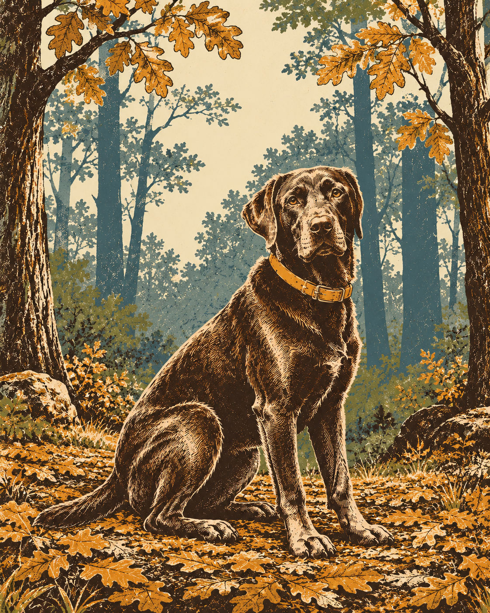

Tuesday's ChoiceFor the weekend of Sat 31 Oct – Sun 1 Nov
Long Valley Farm, Beyond the Field Edge
An easy two-mile loop from old farm fields into longleaf pines, with an optional millpond detour and plenty of room in the plan for Rupert’s pauses.
· Weekend choice 1 of 2

Why This Week
The attraction here is the change of scene within a modest walk: open field, the Rockefeller farmstead and a sandy return through the pines. Follow the white-circle Rockefeller Loop from the welcome-center fence opening; the official two miles describe the complete loop. This is a little more walking than last Thursday’s pine circuit, with farm history and an optional millpond peninsula rather than another forest-only plan. Keep the main loop as the default. Add Cypress Point only if Rupert and the footing are comfortable. Saturday is the better forecast starting point; Sunday currently carries a 50 percent chance of showers. Neither day is a weather clearance, and the forecast can change before the weekend.
Conditions
Saturday: Partly sunny, with a high near 77. Sunday: A chance of rain showers. Mostly cloudy, with a high near 76. Chance of precipitation is 50%. Saturday night: A slight chance of rain showers after 1am. Mostly cloudy, with a low around 56. Sunday night: A chance of rain showers. Mostly cloudy, with a low around 58. Chance of precipitation is 50%.
If it turns
Thunder, unsafe wind, flooding, slippery footing or an official closure: Postpone. A picnic or another outdoor trail is not a thunderstorm alternative; recheck official status and NWS before leaving.
Forecast snapshot · issued Tue 27 Oct, 10:28 ET · National Weather Service — current point forecast
One Complete Loop
The official Rockefeller Loop is two miles, easy, and begins at the opening in the fence near the welcome center. Stay with the marked Long Valley Farm route.
Share the Trail
Hikers and bicyclists use the loop. Keep Rupert on his attended six-foot leash, pause at the side when needed, and leave the farm structures undisturbed.
If Plans Change
- CloserTurn back before the farmstead1 h 25 – 1 h 45 drive · shorten rather than press on
- Bigger dayAdd the millpond peninsula2.75 mi · 1 h 25 – 1 h 45 drive
- AlternativeA picnic and a brief leg-stretch1 h 25 – 1 h 45 drive
Memory Prompt
Which part held Rupert’s attention most: the field edge, the old farmstead or the pine woods?
Sources
- NC State Parks — official status, public access, hours and pets retrieved 2026-10-27
- NC State Parks — official trail listing retrieved 2026-10-27
- NC State Parks — official Long Valley Farm access map retrieved 2026-10-27
- NC State Parks — park news retrieved 2026-10-27
- NC State Parks — pet rules retrieved 2026-10-27
- National Weather Service — current point forecast snapshot retrieved 2026-10-27 · link shows the current forecast
Place details as recorded Tue 27 Oct. They stay as published even if the place's record is corrected later.